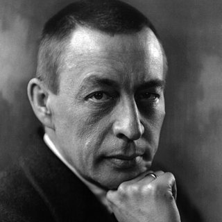

Композиторы › Сергей Рахманинов

Сергей Рахманинов
Последний великий русский романтик: легендарный пианист с огромными руками и незабываемыми мелодиями.
Жизнь
Родился в 1873 году в Новгородской губернии, на северо-западе России, в обедневшей дворянской семье. Учился в Петербургской и Московской консерваториях; Московскую окончил с большой золотой медалью.
Провал Первой симфонии в 1897 году вызвал у него глубокий кризис; выйти из него помог врач Николай Даль, и в 1901 году Рахманинов представил Второй фортепианный концерт, посвящённый именно ему, — он имел мировой успех.
После революции 1917 года он покинул Россию и больше не вернулся: жил в США и Швейцарии, выступая как концертирующий пианист. Умер в Беверли-Хиллз, в Калифорнии, в 1943 году.
Портрет: Kubey-Rembrandt Studios (1921), общественное достояние, источник — Викисклад.

Интересные факты
- У него были огромные руки: он мог взять интервал терцдецимы — гораздо больше, чем обычный пианист.
- Прелюдию до-диез минор он написал в 1892 году, в 19 лет: она стала так знаменита, что публика требовала её на бис на каждом концерте.
- Он был одним из величайших пианистов своего времени и оставил много записей собственного исполнения.
За фортепиано
- Большие аккорды играй весом руки, а не силой пальцев.
- Если аккорд слишком широк для твоей руки, его можно быстро арпеджировать снизу.
- Работай над контрастами: от трёх торжественных ударов в начале до взволнованной средней части.
Пьесы для разучивания 1 пьеса

Выучите её нота за нотой с Piano Learning
В режиме «Ждать ноту» пьеса останавливается, пока вы не нажмёте нужную клавишу — на телефоне или на своём пианино (приложение вас слушает). Руки по отдельности, скорость от 10 %, ноты всегда перед глазами.
Скачать бесплатно в Google Play Бесплатно, как «Кампанелла», Турецкий марш, Jingle Bells и «Братец Яков». Сотни других пьес — одной покупкой, без подписки.